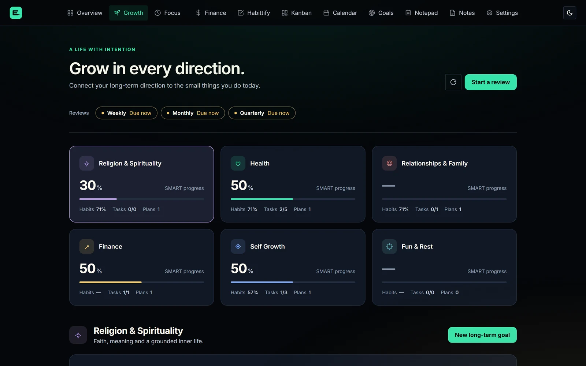
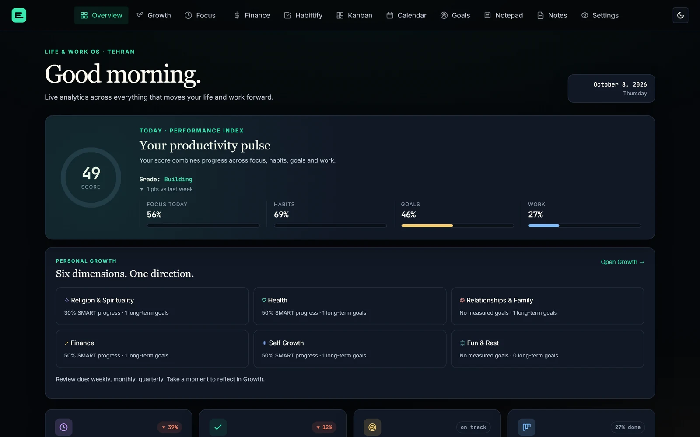
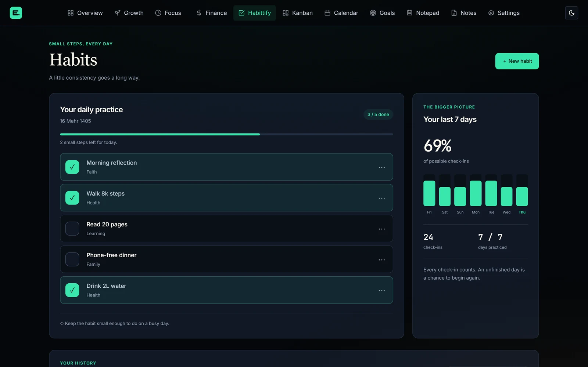
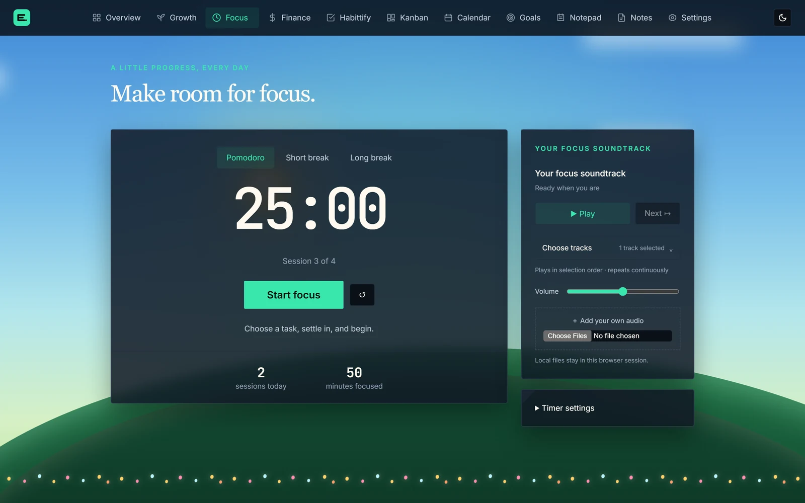
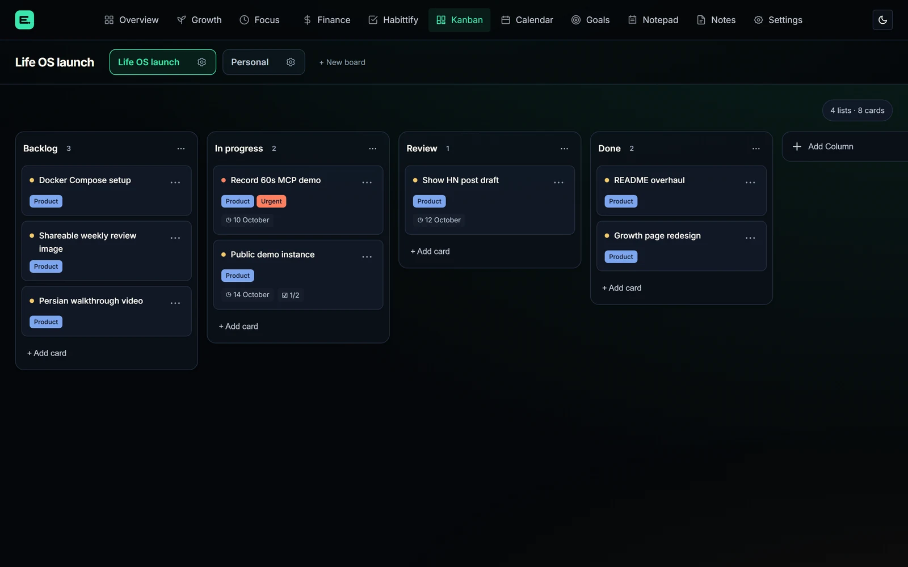

Six areas of life, one direction
Spirituality, health, family, money, learning and rest, each linked to long-term goals and the habits behind them. A guided weekly review asks for one honest note and one next step.

Habits, goals, focus and money.
One calm app, on your own server.

Why it exists
Each tool is fine on its own. Together they can't answer the only question that matters:
“Am I moving toward the life I want?”
One place, connected
A habit can drive a goal's progress, cards land in your calendar, and the Overview turns it all into one score for the day.
Spirituality, health, family, money, learning and rest, each linked to long-term goals and the habits behind them. A guided weekly review asks for one honest note and one next step.

Habits small enough for a busy day, with streaks and a seven-day picture.

A Pomodoro timer with a soundtrack and a sky that follows the time of day.

Boards with labels, priorities, due dates, checklists, comments and attachments.

Expenses and budgets, plus debts and credits, one-time or recurring, recorded straight into your ledger.
SMART goals driven by checklists, measures, or a habit's attendance.
Card due dates and money dues together, with overdue items flagged.
AI-ready
A built-in MCP server gives Claude and other assistants 15 tools across your dashboard, goals, tasks, habits, finances and notes.
Self-host in minutes
Plain PHP, MySQL and vanilla JavaScript: no framework, no build step, nothing that breaks on upgrade.
# Get the code
$ git clone https://github.com/edrisranjbar/lifeos.git && cd lifeos
# Set your sign-in and passwords
$ cp .env.example .env
# Start the app and MySQL
$ docker compose up -d
# Open http://localhost:8080App and MySQL with volumes for your data and attachments. Upgrades are one rebuild.
Download the release zip, extract it into your home folder, add your MySQL details. Done.
Any PHP 8.1+ host with MySQL 8 or MariaDB. Run it locally with PHP's built-in server.
Everything lives in your own MySQL database. No subscription, no telemetry.
MIT licensed. Read it, fork it, change it, make it yours.
Dark and light themes, built for focus, and layouts that work on a phone.
Issues are open, and first-time contributors are welcome.
Start today
Free, open source, and running on your own server in minutes.